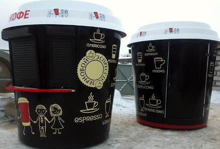
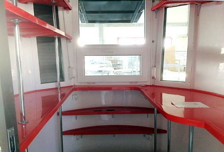

<section class="product page__global">
  <div class="product__inner">

    <h1 class="product__title page__title">Архитектура и дизайн
    </h1>
    <ul class="breadcrumb">
      <li class="breadcrumb__item">
        <a class="breadcrumb__link" href="index.html">Главная</a>
      </li>
      <li class="breadcrumb__item">
        <a class="breadcrumb__link" href="product.html">Продукция</a>
      </li>
      <li class="breadcrumb__item">Архитектура и дизайн
      </li>
    </ul>

    <div class="wrapper">

      <p class="page__text">
        Композиционные материалы известны во всем мире уже несколько десятилетий. Однако их только недавно стали использовать дизайнеры и архитекторы. Широкое применение композитов сдерживалось, в основном, отсутствием промышленных технологий, позволяющих наладить производство продукции массового потребления.  Теперь их выпуск стал не только возможным, но и, что самое важное, экономически целесообразным.
      </p>
      <p class="page__text">
        Композиционные материалы называют строительными материалами XXI века. Они обладают уникальным сочетанием свойст дерева, металла и полимера: высокой прочностью, низкой теплопроводностью, устойчивостью к агрессивным средам и резким перепадам температур, био-, влаго- и атмосферостойкостью, долговечностью.
      </p>
      <p class="page__text">
        Прогрессивные инновационные технологии производсва композитов и удивительные свойства этих материалов раскрывают творческий потенциал архитекторов и дизайнеров. Теперь можно создавать более выразительные дизайны, объемы и композиции новых строящихся зданий и более уважительно относиться к реконструкции исторических построек.
      </p>
      <p class="page__text">
        Инновационные технологии отделки и ремонта фасадов зданий позволяют резко сокращать сроки работ, снижают их стоимость, но при этом предоставляют широчайшие возможности для оживления архитектурного дизайна, использования образности, фантазии, идеи возрождения национального колорита, исторического наследия.
      </p>
      <p class="page__text">
        Для строительства и ремонта фасадов зданий разработаны облицовочные материалы, не уступающие по прочности натуральному камню, долговечные, устойчивые к загрязненной атмосфере городов и промышленных центров. Кроме высоких функциональных качеств, новые фасадные материалы экологичны и необычайно красивы. Созданные искусственным путем, они превосходно повторяют живой природный рисунок и фактуры ценных пород камня, дерева, металла.
      </p>
      <p class="page__text">
        Современные архитекторы высоко оценивают достоинства композитов. Эти фасадные материалы невероятно раскрепощает их творческую фантазию,  замечательно отвечают фасадным решениям различных стилей и направлений. Они помогают избежать однообразности и унылости архитектурных форм, поскольку прекрасно передают пластику и геометрию форм, пропорции, линии и динамику.
      </p>
      <p class="page__text">
        Композиционные материалы предоставляют неограниченные возможности для творчества и позволяют находить уникальные креативные решения в различных областях. Эти материалы идеально отражают имидж и представляют высокое качество рекламируемых услуг.
      </p>
      <p class="page__text">
        Дизайнеры все чаще используют композиты в современном строительстве и в дизайне интерьеров, причем области применения расширяются:
      </p>
      <ul>
        <li>фасады зданий;</li>
        <li>оформление витрин и магазинов;</li>
        <li>отделка аэропортов, вокзалов, торговых павильонов;</li>
        <li>детали колонн, навесы;</li>
        <li>карнизы, фризы, подвесные потолки;</li>
        <li>облицовка балконов, парапетов;</li>
        <li>дверные филенки, перегородки;</li>
        <li>архитектура интерьеров;</li>
        <li>отделка ванных комнат и кухонь;</li>
        <li>подоконники, окна;</li>
        <li>осветительная арматура и т.д.</li>
      </ul>
      <p class="page__text">
        Достоинства композиционных материалов очень наглядно проявляются при изготовлении высокоточных и жестких крупноразмерных элементов. Композиты нашли широкое применение в комплексной отделке автозаправочных станций (АЗС), автомоек, автосалонов. При создании автокомплексов важнейшее значение имеет создание привлекательного внешнего вида, эксклюзивного фирменного стиля, использование современных технологий. Комплексное оформление подразумевает разработку дизайна, внешнюю и внутреннюю отделку здания, включая создание таких необходимых сигнальных элементов как придорожные стеллы, ценовые табло, указатели движения, а также внешнее рекламное оформление. Использование композиционных материалов  поможет успешно решить эти проблемы и найти единое стилевое и цветовое решение с учетом высоких эксплуатационных нагрузок.
      </p>
      <p class="page__text">
        Одно из несомненных достоинств – это широкая цветовая гамма. Композиты обладают таким разнообразием расцветок, которое удовлетворит самый взыскательный вкус заказчика. Здесь и никогда не выходящие из моды чистые цвета и вариации на тему натурального камня, смелые цветовые композиции утончённого современного дизайна.
      </p>
      <p class="page__text">
        Все они предлагаются заказчикам, что позволяет выбрать и создать практически любой интерьер в любом стиле, комбинируя, если необходимо, и другие материалы – дерево, керамику, камень, нержавеющую сталь.
      </p>
      <p class="page__text">
        Широко применяясь в жилом сегменте рынка, композиты быстро завоевали известность и в постоянно расширяющемся коммерческом сегменте рынка, в который входит использование их в отделке медицинских учреждений, отелей, ресторанов быстрого обслуживания, магазинов, банков и салонов красоты.
      </p>
      <div class="product__gallery">
        <div class="product__gallery-item">
          
        </div>
        <div class="product__gallery-item">
          
        </div>
      </div>
      <p class="caption">Торговый переносной ларёк для продажи кофе</p>

      <p class="page__text description">
        "Кофе-стакан" состоит из двух частей стеклопластиковых чаш и стеклопластиковой крыши в виде крышки для бумажного кофе-стакана. Простенок заполняется полиуретаном для шумо- и теплоизоляции, что в зимнее время позволяет сохранить тепло, в летнее - прохладу. Внутри павильона, с двух сторон, имеется ряд удобных, вместительных, рассчитанных на большой вес полок. Проём торгового окна закрыт стеклопакетом. Поверх окна установлен навес, который одновременно служит козырьком днём и защитой окна в ночное время. Внутри торговый модуль оснащён электричеством (розетки, система сигнализации, светильник).
      </p>
      <p class="page__text">
        Композиционные материалы в архитектуре и дизайне становятся культовыми материалами. Теперь ими заинтересовались и скульпторы.
      </p>

    </div>


  </div>
</section>